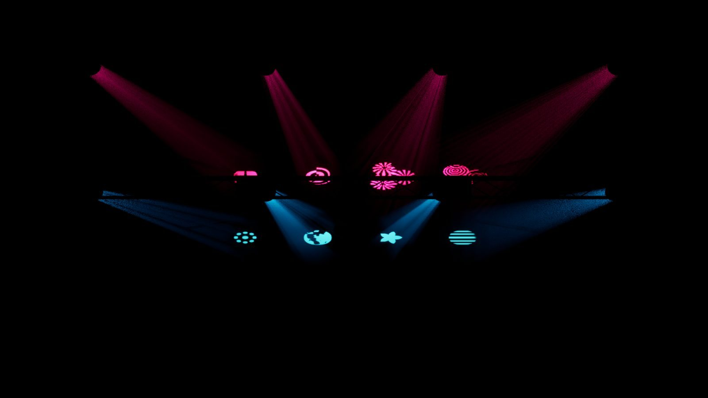
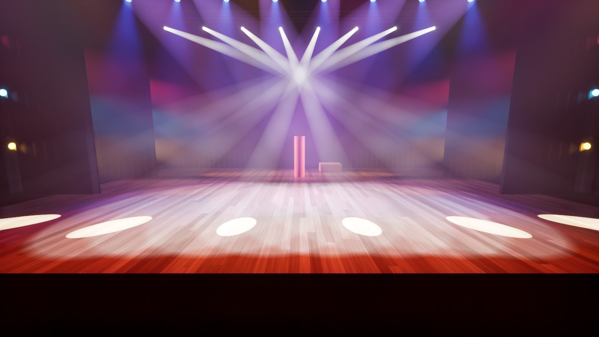
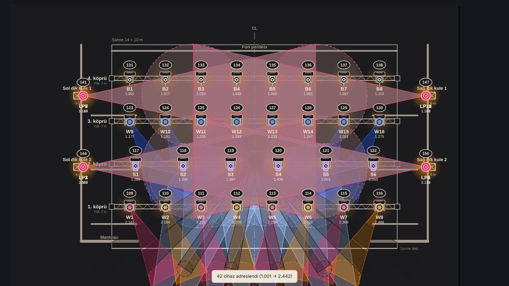
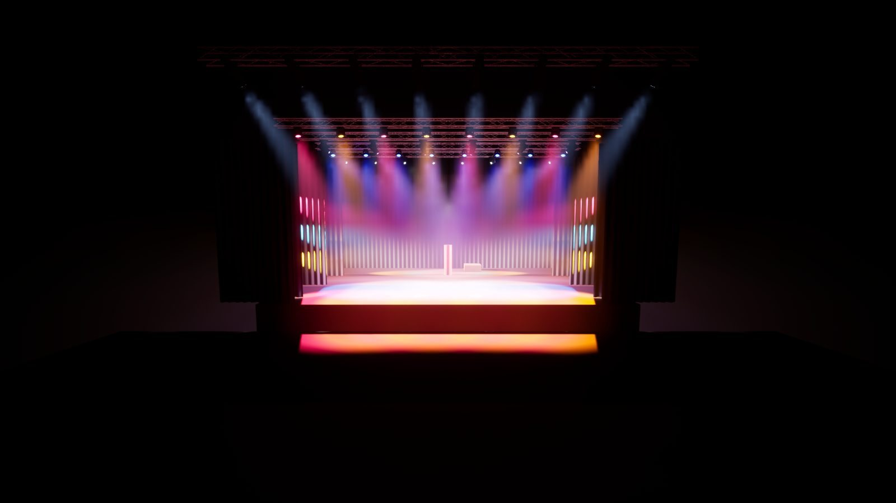
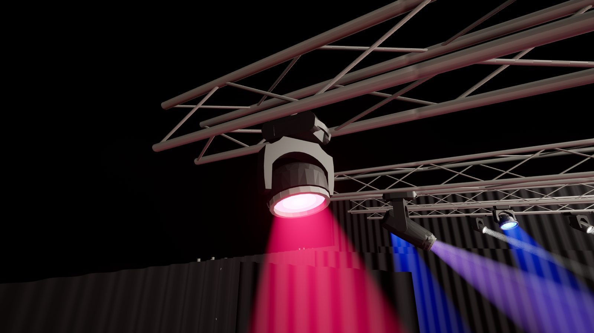
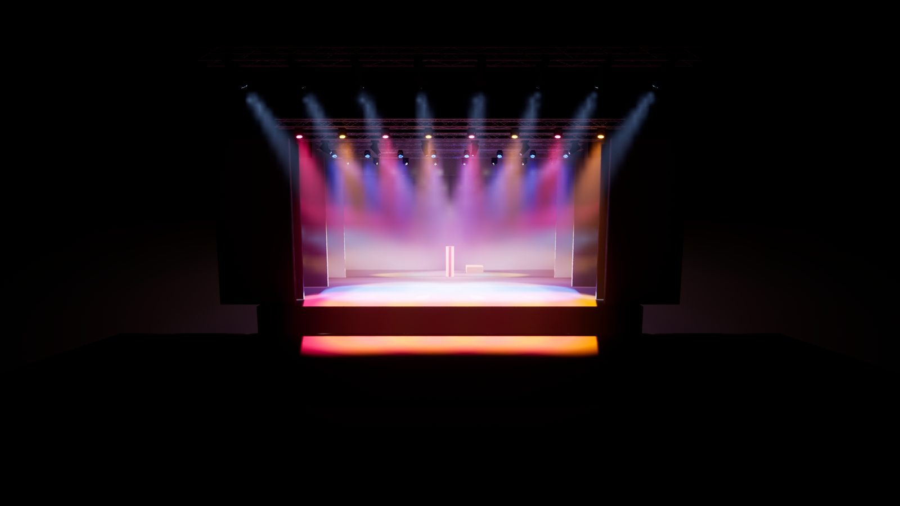
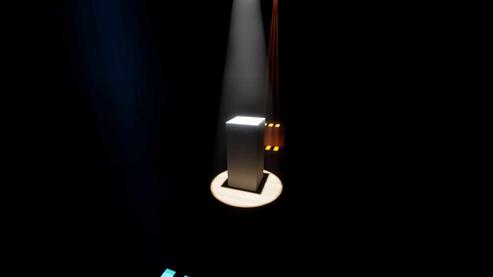

Gobo ve prizma
Net ve sabit gobo
Gobo deseni yerde, perdede ve dumandaki hüzmede aynı çerçevede durur; titremez, eğik açıda dağılmaz.
- Sekiz yerleşik gobo deseni
- Üç yüzlü prizma
- Frost ile yumuşak kenar

LampOff Studio · Beta
LampOff’ta hazırlanan ışık planı, Unreal Engine tabanlı gerçeğe yakın bir 3D sahnede açılır. Haze, gobo, gölge ve gerçek cihaz modelleriyle tasarım ilk provadan önce görülür.
Beta aşamasında · Türkçe ve İngilizce
Plandan 3D’ye
Telefonda ya da tablette hazırlanan LampOff projesi aynı köprüler, cihazlar, odak noktaları ve renklerle Studio’da açılır. Plan ile ön görselleştirme arasında dosya dönüştürme gerekmez.

Plan · LampOff Mobil3D · LampOff StudioÇizgi sağa sola kaydırılarak plan ile 3D görüntü karşılaştırılır.
Işık ve haze
Hüzmeler havada asılı kalmaz, çarptığı yüzeyde biter. Global aydınlatma, yansıma ve gölgeler sahneyi gerçek bir salon gibi kurar.

Cihazlar
Cihazlar GDTF dosyasındaki 3D geometriyle sahneye gelir; taban, yoke ve kafa ayrı parçalardır ve pan/tilt gerçek eksenlerde döner. Mercek ışığın rengiyle parlar.


Gobo ve prizma
Gobo deseni yerde, perdede ve dumandaki hüzmede aynı çerçevede durur; titremez, eğik açıda dağılmaz.

Proje
Yalnızca cihazlar değil; köprü yükseklikleri, perde, kulis ve dekor da plandaki yerleriyle açılır.

Kamera
Hazır bakışlar salon, sahne önü, üstten ve iki yan arasında tek tuşla geçer; serbest kamera sahnenin her köşesine yaklaşır.
Görüntüler
Tüm görüntüler LampOff Studio’nun beta sürümünde, oyun motorunda gerçek zamanlı alınmıştır.
Yol haritası
Plan çizimi, patch ve odak ekranları Studio’nun içinde.
Art-Net ve sACN ile konsoldan canlı DMX.
GDTF modelleriyle hazır gelen kütüphane.
Durum
Beta hakkında: lampoff.info@gmail.com